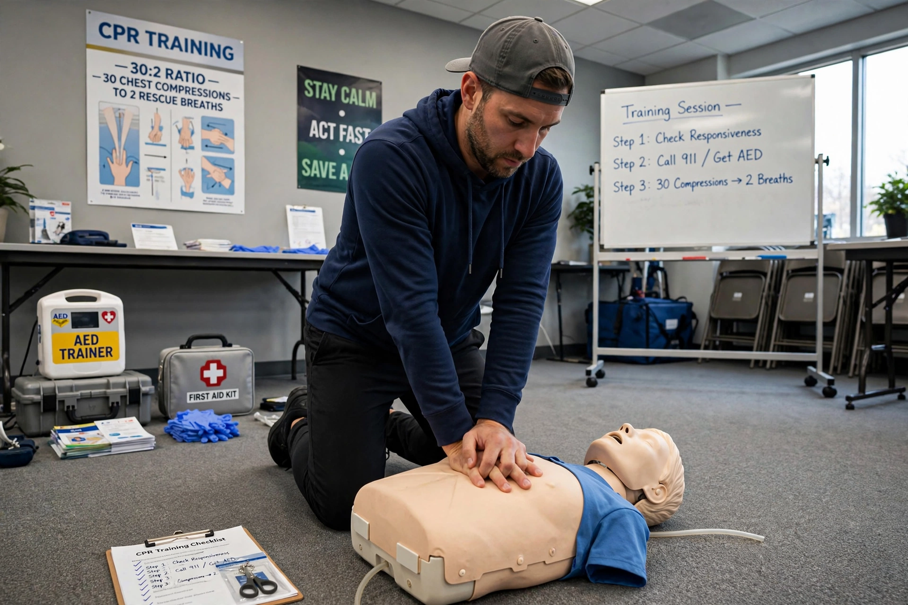

Cardiac arrest
From Wikipedia, the free encyclopedia
| Cardiac arrest | |
|---|---|
 | |
| Specialty | Cardiology, emergency medicine, critical care |
| Symptoms | Unconsciousness, absent or agonal breathing, no pulse |
| Causes | Coronary artery disease, arrhythmia, hypoxia, electrocution, drug overdose, major blood loss |
| Treatment | CPR, defibrillation, advanced life support |
| Prognosis | Survival to discharge ~10% out-of-hospital; higher in-hospital and with early defibrillation |
Cardiac arrest, also known as sudden cardiac arrest, is the abrupt loss of heart function, breathing and consciousness, usually caused by an electrical disturbance in the heart that disrupts its pumping action and stops blood flow to the body. Unlike a heart attack (myocardial infarction), which results from blocked blood flow to heart muscle, cardiac arrest is primarily an electrical event — though a heart attack can trigger it.
Causes and mechanisms
The most common immediate rhythms are ventricular fibrillation and pulseless ventricular tachycardia ("shockable" rhythms); asystole and pulseless electrical activity are non-shockable. Coronary artery disease underlies most adult cases; other causes include cardiomyopathies, channelopathies such as long QT syndrome, hypoxia, electrolyte disturbances (notably potassium), hypothermia, toxins and tension pneumothorax — grouped in teaching as the "Hs and Ts". Sudden cessation of cerebral blood flow starves the brain of glucose and oxygen, causing irreversible injury within minutes.
Management
Survival depends on the "chain of survival": immediate recognition and emergency call, early high-quality cardiopulmonary resuscitation (chest compressions 100–120/min), rapid defibrillation for shockable rhythms, advanced life support with adrenaline and airway management, and post-resuscitation care including targeted temperature management and coronary angiography. Public-access automated external defibrillators (AEDs) and bystander CPR substantially improve outcomes. Prevention in high-risk patients may include implantable cardioverter-defibrillators and treatment of underlying disease; see also cancer care, where arrest may complicate advanced illness.